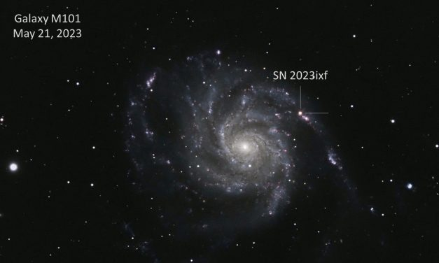
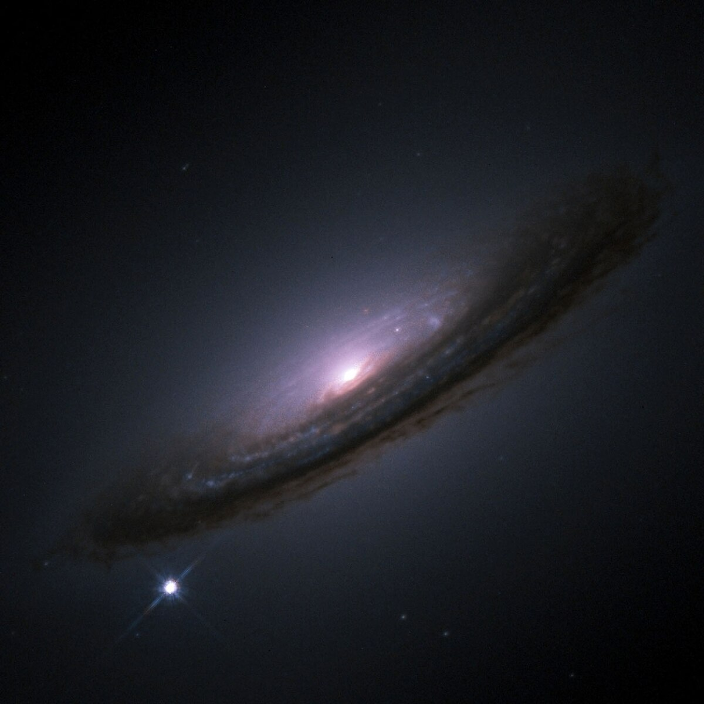
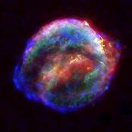
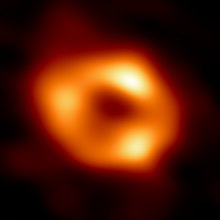
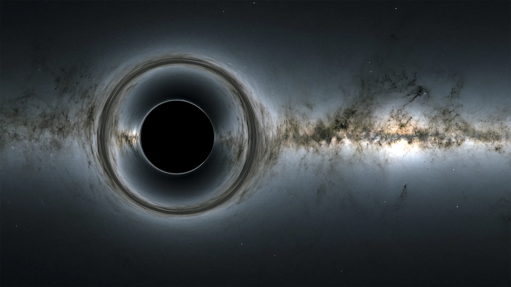
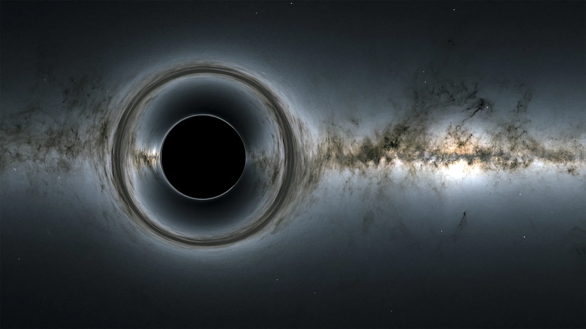
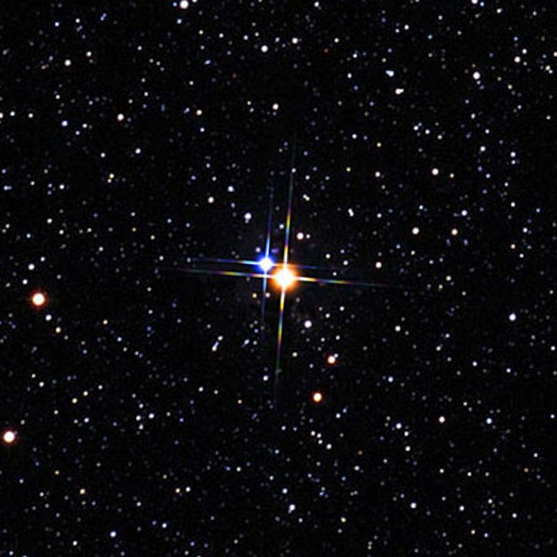
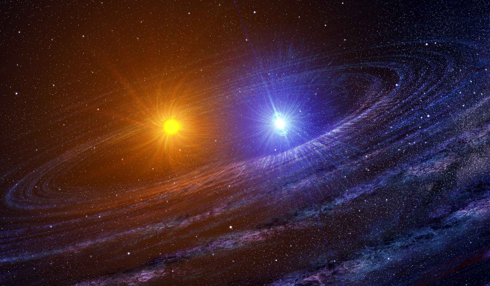
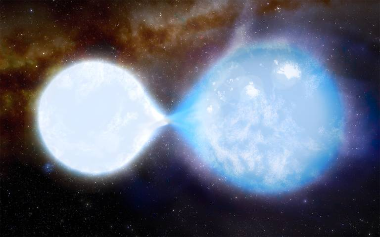

FENOMENO COSMICI
I fenomeni cosmici sono eventi straordinari che si verificano nell'universo e che spesso sfidano la nostra comprensione della natura. Questi eventi includono supernove, esplosioni stellari di incredibile energia, che forniscono importanti indizi sulla vita e sulla morte delle stelle; buchi neri, regioni dello spazio dove la gravità è così intensa da catturare persino la luce; stelle binarie, coppie di stelle che orbitano attorno a un comune centro di massa; Attraverso l'osservazione e lo studio di questi fenomeni, gli astronomi possono sondare i segreti dell'universo e comprendere meglio la sua struttura, la sua composizione e la sua evoluzione nel corso del tempo.
SUPERNOVO

Le supernove sono tra gli eventi più spettacolari e violenti dell'universo. Si verificano alla fine della vita di stelle massicce, quando il loro nucleo collassa sotto la propria gravità, generando un'esplosione incredibilmente potente. Durante una supernova, la stella diventa temporaneamente molto più luminosa, emettendo energia e radiazioni in quantità enorme. Queste esplosioni possono rilasciare una vasta gamma di elementi pesanti nello spazio circostante, contribuendo alla formazione di nuove stelle e pianeti. Le supernove sono fondamentali per la comprensione dell'evoluzione stellare e la distribuzione degli elementi nell'universo. Esistono diversi tipi di supernove, ognuno con le proprie caratteristiche e meccanismi di formazione.


BUCONERO
I buchi neri sono tra i fenomeni più enigmatici e intriganti dell'universo. Si tratta di regioni dello spazio dove la gravità è così intensa da impedire alla luce di sfuggire. Questi oggetti misteriosi si formano quando una stella massiccia esaurisce il suo combustibile nucleare e collassa su se stessa sotto l'effetto della gravità.
Il risultato è un'entità incredibilmente densa e compatta, nota come singolarità, circondata da un confine chiamato orizzonte degli eventi. Questo orizzonte segna il punto di non ritorno per qualsiasi oggetto o radiazione, poiché nulla può sfuggire alla gravità estrema del buco nero una volta oltrepassato questo confine.
I buchi neri possono variare in dimensioni, dai buchi neri stellari, che hanno una massa fino a diverse decine di volte quella del nostro Sole, ai supermassicci buchi neri, che risiedono al centro delle galassie e possono avere una massa milioni o miliardi di volte quella del Sole.
Sebbene i buchi neri siano invisibili direttamente, possono essere individuati dagli effetti che producono sulle stelle e sul gas circostanti. Ad esempio, la gravità di un buco nero può causare la distorsione della luce delle stelle di fondo o l'emissione di intensa radiazione quando la materia viene inghiottita.

 

STELLE BINARIE

Le stelle binarie sono sistemi stellari composti da due stelle che orbitano attorno al loro comune centro di massa e questi sistemi sono comuni nell'universo..
Le stelle binarie possono assumere diverse configurazioni a seconda della distanza tra le due stelle e delle loro masse relative. Alcune stelle binarie sono legate da una forza gravitazionale così forte da orbitare molto ravvicinate tra loro, mentre altre possono avere orbite più distanziate.
Questi sistemi stellari forniscono agli astronomi importanti informazioni su vari aspetti dell'universo, come la massa delle stelle, la loro età, la composizione chimica e l'evoluzione stellare. Inoltre, le stelle binarie possono essere osservate per studiare fenomeni come le eclissi stellari e le variazioni nella luminosità, che forniscono preziose indicazioni sulle proprietà delle stelle coinvolte.
Le stelle binarie possono anche evolversi in modi interessanti, ad esempio trasferendo materia da una stella all'altra o collassando per formare buchi neri o stelle di neutroni. Questi processi possono portare alla formazione di oggetti come le supernove, le pulsar e i sistemi di buchi neri binari, che rappresentano alcuni dei fenomeni più estremi e dinamici dell'universo.

